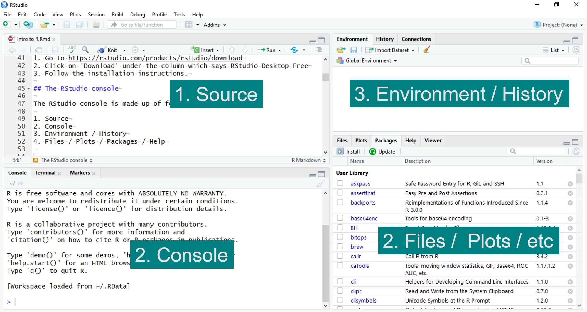
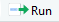

2 + 2[1] 4R is a free to use open source software that can be used for data visualisation and statistical analysis. RStudio is an integrated development environment - it’s a more user friendly interface for R.
We will start by downloading and installing these two pieces of software.
First we need to install R:
Next we will install RStudio:
Once R and RStudio have been installed on your computer, open Rstudio. You will see that the RStudio interface is made up of four panels :

The Console is where all your code will be evaluated.
You can start typing immediately into the Console. For example, try typing some basic arithmetic and pressing enter, the output should look like this:
R can be used as a basic calculator, and most operations are straightforward:
Add :
Subtract:
Multiply :
Divide :
Square :
The problem with typing directly into the R console is that you can’t edit as you type.
Instead, we want to be able to edit our code and save our progress.
We do this using an R script.
The Source panel is where we will edit and write our code.
To open a new R script go to ‘File’ then ‘New file’ then ‘R script’. Alternatively click on the icon then select ‘R script’.
To save the R script, go to ‘File’ then ‘Save’, or click on the save icon .
Type 2+2 into your R script. Then, make sure the mouse pointer (cursor) is on the line you want to evaluate (it can be at the beginning, the middle, the end - it doesn’t matter!) .
To ‘run’ your line of code, click on the  symbol or press CTRL and Enter simultaneously (command and Enter on a Mac).
You will now see that your line of code has been evaluated in the R console. This is called ‘running’ a line of code.
The working directory is where we will save any plots we make, and store data we will be using. Once setup, the directory is the default place that our plots will be saved to. It will also be the default place that R searches for any data we want to use.
The working directory can be set up in two ways. We can select the folder we want to set as our working directory as follows:
‘Session -> Set Working Directory -> Choose Directory…’
Then press ‘Open’ when you find your chosen folder.
Or, we can use the command setwd() which stands for “set working directory”. We use the function setwd() by typing the file path, for example:
setwd("C:/Users/Amanda/Documents")
We will see why the working directory becomes important when we start to read in external data files and save plots. To check what your current working directory is type getwd() into the console.
We have used the R console to perform some basic calculations such as addition and subtraction. In some cases, you will need to perform the same calculation over and over again. This is where assigning values becomes useful.
Some animals carry and transmit diseases between the environment and humans. In this case let’s say we want to show the demographic characteristics of a population of wild rats. The data is given to us in kilograms but want it in grams.
For each weight, 0.23, 0.164, 0.268, 0.188, 0.299 in kilograms, we can multiple by 1000 to get the corresponding weight in grams. For the first two weights 0.23 and 0.164 we do this as follows:
This is quite an inefficient way to do this calculation! We would have to type each weight separately. Let’s improve this calculation by assigning the value 1000 to a letter,
If you run the line above, the R console does not print anything. This is because you have ‘assigned’ a the value 1000 using <-, so to see what a is, you need type it into the R console.
If you now look at the Environment panel, you will see that we have loaded a into our global environment. This means that R will remember what a is.
We assigned a a value to make our calculation more efficient. Now, we can multiply each weight by a :
But, we can improve the efficiency of our calculation even further by placing our weights into a vector. A vector is a basic data structure used to store a sequence of elements of the same type. In our example, we are storing numeric values in a vector named weights.
The c means concatenate. We are concatenating all of our weights into one vector.
Now we can perform our calculation in fewer lines, and we can easily change either the weight vector, or if we were performing a different conversion, we can change a.
In the previous sections, we performed fairly basic calculations but R can be used to perform advanced statistical analysis. R has many built in functions that can be used to analyse data, create plots and much more.
A functions requires one or more inputs, or ‘arguments’, and gives one or more outputs, or ‘values’.
Let’s look at an example. Say we want to find the maximum and minimum weights in our vector. Then we can use the functions min and max with the weight vector as our argument (input):
If you are unsure of what an R function is doing, then you can type ? in front of the function name into the R console, which will take you to the help page of that function.
The help pages describe the usage of the function and the arguments which need to be passed to the function. For example, try typing into the console?max.
There is a search bar which can be used to look for R functions in the Help tab of the Files / Plots / Packages / Help panel. However, if you do not know the name of the function you are looking for it can be easier to instead use a search engine.
Using the vector of weights in the assigning values section (0.23, 0.164, 0.268, 0.188, 0.299), find the mean of the and standard deviation of the weights (in kg) to two decimal places.
We use the R functions mean and sd to find the mean and standard deviation respectively.
We can find the mean and standard deviation to 2 decimal places using the function round. Note that round has two inputs. The first is the vector of values and the second is the number of decimal places.
In the code below, note how we can concatenate already assigned objects into a new vector c(mean_val,sd_val).